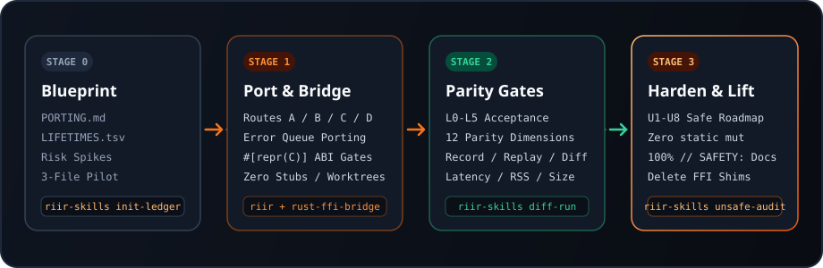

riir
Flagship RIIR orchestrator: route matrix, PORTING.md, LIFETIMES.tsv, risk spikes, 3-file pilot, worktree discipline, and Phase-2 hardening.
OrchestratorInspect →
riirdev/skills pairs seven focused Agent Skills with a pure standard-library Rust CLI.
Choose the right migration route, lock behavioral parity with differential harnesses, isolate FFI boundaries,
and systematically harden unsafe blocks across 14 AI coding tools.
Compiles-cleanly proves types, not semantics. Each phase enforces explicit ledgers and machine-checked gates before advancing.

Select your project constraints to inspect the recommended RIIR route, ledgers, skill sequence, and exit gate.
No live hybrid releases needed AND an independent test suite / oracle already exists.
Flagship RIIR orchestrator: route matrix, PORTING.md, LIFETIMES.tsv, risk spikes, 3-file pilot, worktree discipline, and Phase-2 hardening.
Record/replay/diff truth sets, 12-dimension structural parity, L0-L5 acceptance ladder, fault injection, and anti-fake-pass controls.
Narrow FFI seams (C ABI, N-API, PyO3, WASM, mobile), compile-time layout assertions, panic sealing, and bridge-lift burn-down.
Staged U1-U8 roadmap: pure-logic crates, killing static mut, generational handles, 100% // SAFETY: docs, and CI ratchets.
Acyclic crate layering, CLI-as-kernel / thin-shell design, domain errors, bounded shutdown, and clean-slate contracts.
Separate latency, throughput, and memory axes; fair cold/warm gates; profiling and fixing top-10 Rust port bottlenecks.
1-for-1 paired file/method construction, language-neutral JSONL contracts, and decoupled test/coverage parity gates.
Toggle target AI coding tools, scope, and install mode. Dry-run by default until --apply is included.
Zero-dependency pure-Rust utilities shipped alongside the skills for validation, unsafe auditing, and differential parity testing.
$ cargo run -- validate
Validated 7 skills and 3 plugin manifests: 0 error(s)$ cargo run -- unsafe-audit src tests --forbid-static-mut --require-safety-docs --forbid-file-allows --max-unsafe-blocks 0
Unsafe Audit: 11 file(s) scanned | forbid(unsafe_code)=0 | file_allows=0 | unsafe_blocks=0 (documented=0) | unsafe_fn=0 | static_mut=0$ riir-skills diff-run --legacy "./ref-bin" --rust "./target/release/app" --cases parity.jsonl --timeout-ms 5000
Differential Parity: 128/128 passed (0 failed)$ riir-skills init-ledger ./my-rewrite --mode incremental --apply
[create] ./my-rewrite/PORTING.md
[create] ./my-rewrite/LIFETIMES.tsv
[create] ./my-rewrite/PARITY.md
[create] ./my-rewrite/UNSAFE-MANIFEST.json